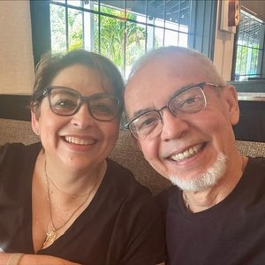

Berty Rodríguez
Sound EngineerRecording, mixing, post-production and live streaming, in the studio or on location. Thirty years of television and live events, from the Pope's visit to Puerto Rico to Carnegie Hall.
- 35 posts
- 5 tags



Recording, mixing, post-production and live streaming, in the studio or on location. Thirty years of television and live events, from the Pope's visit to Puerto Rico to Carnegie Hall.